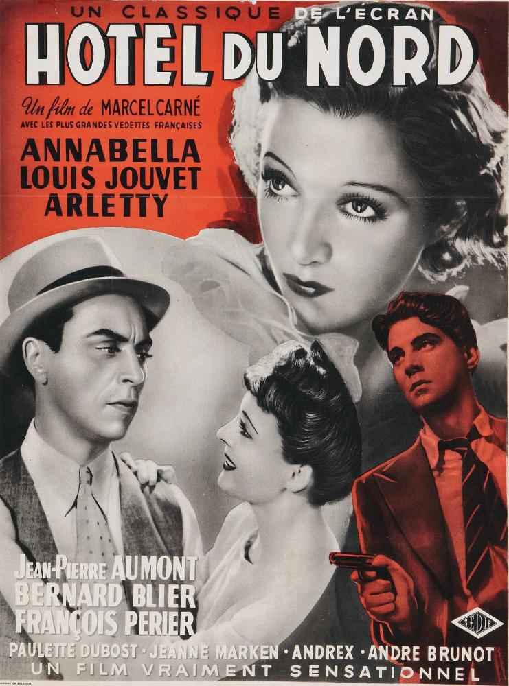
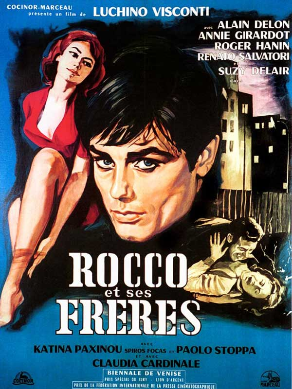

My favorite movies
|  |
Hôtel du NordHôtel du Nord est un film français, réalisé par Marcel Carné et sorti en 1938. Un hôtel modeste au bord du canal Saint-Martin abrite une clientèle bigarrée. Pierre et Renée, un couple d'amoureux, décident d'en finir avec la vie. Ce qui va s'avérer plus difficile que prévu. Un autre couple, M. Edmond, mystérieux homme, et Raymonde, une prostituée, vont se mêler à l'histoire des amoureux désespérés. |
|  |
Jeux interditsJeux interdits est un film français de René Clément, écrit par Pierre Bost et Jean Aurenche, sorti en 1952. Le film est basé sur un roman de François Boyer intitulé Les Jeux inconnus. |
 |
Rocco et ses frèresRocco et ses frères (Rocco e i suoi fratelli) est un film franco-italien de Luchino Visconti (1960). Appartenant à la veine néo-réaliste du cinéma italien Rocco et ses frères conte les déboires d’une famille de Basilicate récemment immigrée à Milan. |